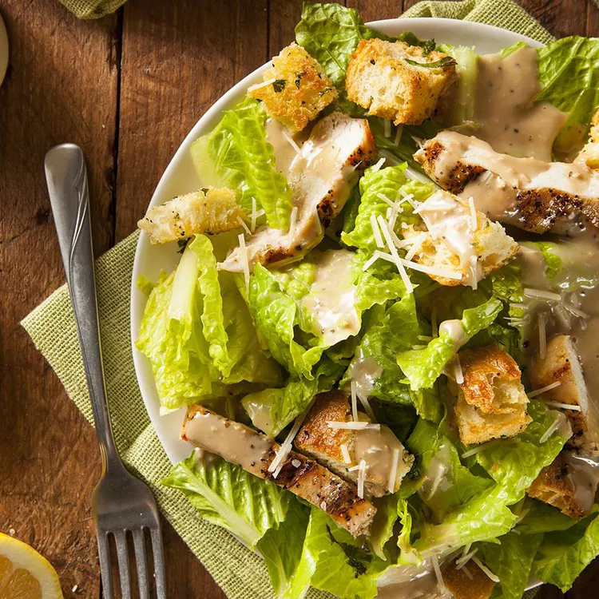

Chicken Caesar Salad

Description
A classic recipe for a reason, this chicken Caesar salad is delicious and satisfying. Crunchy romaine, creamy dressing, tender chicken and savoury cheese come together for a tasty favourite.
Ingredients
- 6 cups tightly packed chopped romaine lettuce
- 1 pound cooked boneless skinless chicken breasts, cut into strips
- ½ cup CRACKER BARREL Finely Shredded 100% Parmesan Cheese
- ½ cup seasoned croutons
- ¼ cup KRAFT Creamy Caesar Dressing
Steps
- Cover 4 plates with lettuce.
- Top with all remaining ingredients except dressing.
- Drizzle with dressing just before serving.
Back